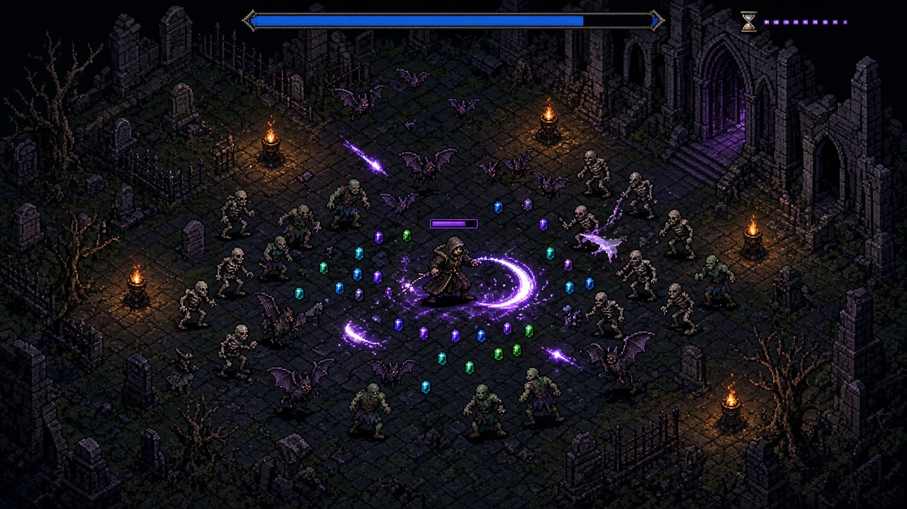
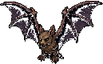
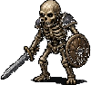
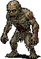
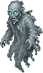
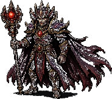
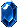
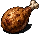

Procedural Isometric Arena
128×64 TileMapLayer + Y-Sort
Generates a seeded gothic graveyard using FastNoiseLite terrain patches,
boundary water walls, Y-sorted obstacles, and flickering brazier lights.
Nightfall is a playable isometric 2D gothic survivor-like built in Godot 4
with strict static typing, data-driven Resource definitions, object pooling,
procedural graveyard generation, and automated headless tests — ready to play, mod, or
reuse as a clean open-source template for your own games.






Designed for clarity and beginner-friendly extensibility without sacrificing real survivor-like engineering fundamentals.
Generates a seeded gothic graveyard using FastNoiseLite terrain patches,
boundary water walls, Y-sorted obstacles, and flickering brazier lights.
Weapons and passives live in .tres resources (WeaponData,
PassiveData). Level-up cards offer 3 choices with rerolls and skips.
Enemies, projectiles, XP gems, coins, chickens, and floating damage numbers are
prefilled and recycled via PoolManager to avoid runtime GC spikes.
Collect gold coins during runs, bank them automatically on death or victory, and
unlock new weapons in the gothic Unlocks shop. Settings persist in user://.
Sprite hit-flash, directional knockback, camera shake with decay, pooled damage numbers, and procedural placeholder SFX/music waves with zero external audio lock-in.
Every core mechanic—movement, collision, weapons, XP curve, pooling, boss spawn,
save/load, and full UI transitions—is verified by headless SceneTree scripts.
Stats below match the actual .tres resource files under
res://resources/.
Lashes horizontally toward the nearest foe on cooldown, cleaving groups in an arc.
Fires a silver projectile aimed automatically at the closest enemy in range.
Surrounds the hunter with an orbiting ring that pulses damage to nearby enemies.
+20 Max HP and immediately heals 20 HP per rank (up to Level 5).
+15% Move Speed per rank to kite swarms through graveyard obstacles.
-10% Weapon Cooldown per rank across all equipped weapons.
+15% All Weapon Damage per rank for late-run boss melts.
Fast early-game swarm flyer.
Balanced undead pursuer with higher coin drop rate.
Slow, durable bruiser that absorbs whip strikes.
Rapid mid-wave stalker that closes distance quickly.
Final boss with dedicated HUD health bar. Defeating him triggers run victory.

XP Gem Dropped on enemy death
Roast Chicken 3–5% drop · heals HPClick any reference screen to inspect the gothic UI layout, 9-slice frames, and isometric arena composition.
Nightfall separates gameplay logic from content data. Create new weapons, enemies, and
upgrades in minutes using Godot Resource files—no core script rewrites needed.
# 1. Create a WeaponData resource in res://resources/weapons/frost_nova.tres
[gd_resource type="Resource" script_class="WeaponData" load_steps=3 format=3]
[ext_resource type="Script" path="res://scripts/resources/weapon_data.gd" id="1_wd"]
[ext_resource type="PackedScene" path="res://scenes/weapons/spirit_aura_weapon.tscn" id="2_scn"]
[resource]
script = ExtResource("1_wd")
id = "frost_nova"
display_name = "Frost Nova"
description = "Chills nearby foes in an expanding arcane pulse."
damage = 12
cooldown = 1.1
attack_size = Vector2(96, 96)
max_level = 5
weapon_scene = ExtResource("2_scn")
# 2. Register it in LevelUpScreen.WEAPON_DATAS (and SaveManager.DEFAULT_UNLOCKS if unlocked by default).# 1. Duplicate an EnemyData resource (e.g. res://resources/enemies/werewolf.tres)
# 2. Point enemy_scene to a scene extending EnemyBase (res://scripts/actors/enemy_base.gd)
# 3. Add the resource to res://resources/waves/early_waves.tres with an unlock timestamp:
enemy_types = Array[Resource]([..., ExtResource("6_werewolf")])
unlock_times_sec = Array[float]([0.0, 20.0, 45.0, 75.0, 120.0])
# Note: Unused CC0 werewolf.png & mushroom.png sprites are already included in res://assets/characters/enemies/!# Create a PassiveData .tres in res://resources/upgrades/
# StatType enum in scripts/resources/passive_data.gd:
# 0 = MAX_HP | 1 = MOVE_SPEED | 2 = COOLDOWN_REDUCTION | 3 = DAMAGE
[gd_resource type="Resource" script_class="PassiveData" load_steps=2 format=3]
[ext_resource type="Script" path="res://scripts/resources/passive_data.gd" id="1_pd"]
[resource]
script = ExtResource("1_pd")
id = "fleet_cloak"
display_name = "Fleet Cloak"
description = "+10% Move Speed."
stat_type = 1
amount_per_level = 0.1
max_level = 5# Verify Godot version, import assets cleanly, and run all 31 headless CI checks:
godot --version
godot --headless --path . --import
for f in scripts/ci/*.gd; do
godot --headless --path . -s "res://$f" || exit 1
done
Strict static GDScript typing (warnings treated as errors in
project.godot) and decoupled signal-based communication.
| Autoload Singleton | Responsibility |
|---|---|
EventBus |
Global typed signals only (run_started, enemy_died, level_up, boss_died). |
RunState |
Transient run timer, XP curve, level, HP, gold, rerolls, and passive levels. |
PoolManager |
Pre-warmed object pools for enemies, bolts, gems, coins, chickens, and damage text. |
SaveManager |
Persists meta_gold, weapon unlocks, fullscreen, and volume via ConfigFile. |
AudioManager |
Pooled SFX players and looping placeholder menu/run synth music. |
| Layer | Name | Used By |
|---|---|---|
| 1 | world | Boundary wall tiles and Y-sorted graveyard props |
| 2 | player | Player CharacterBody2D & hurtbox |
| 3 | enemies | Chasing enemies & Vampire Lord boss |
| 4 | player_hit | Whip arc, Holy Bolt projectile, Spirit Aura |
| 5 | enemy_hit | Enemy contact damage hitboxes |
| 6 | pickups | XP gems, gold coins, roast chicken |
Pinned to Godot 4.8-beta3 (standard GDScript build, see
VERSION.txt).
git clone <your-fork-or-repo-url>.git
cd Nightfall
godot --headless --path . --import
godot --headless --path . -s res://scripts/ci/smoke_test.gd
Open project.godot in Godot 4.8-beta3 and press F5 to launch
res://ui/main_menu/main_menu.tscn.
This static site lives in docs/ and includes
.github/workflows/pages.yml. To publish on GitHub:
/docs.https://<user>.github.io/<repo>/.Permissive dual licensing ensures you can freely redistribute Nightfall or use its code and sprites in commercial or hobby projects.
All GDScript files, Godot scenes, custom resources, UI themes, and this GitHub Pages
website are licensed under the MIT License (LICENSE).
All original tiles, props, character sprites, pickups, and UI textures under
assets/ are dedicated to the public domain via CC0 1.0
(assets/LICENSE).
Includes addons/lit/ (2D lighting) and addons/godot_mcp_toolkit/,
each distributed under their respective MIT licenses.